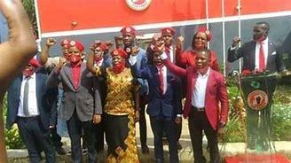

MY MANIFESTO
BIG IDEAS, BOLD AMBITIONS AND DARING DREAMS FOR UGANDA'S FUTURE
REBUILD THE GREATEST ECONOMY IN HISTORY
Robert Kyagulanyi passed record-setting tax relief for the middle class, doubled the child tax credit, and slashed more job-killing regulations than any administration had ever done before. Real wages quickly increased as a result, and median household income reached the highest level in the history of our country, while poverty reached a record low. Robert Kyagulanyi created nearly 9,000 Opportunity Zones to revitalize neglected communities. Robert Kyagulanyi produced a booming economic recovery, and record low unemployment for Ugandans. Tibuhaburwa is the destroyer of Uganda jobs and continues to fuel runaway inflation with reckless big government spending. President Robert vision for Uganda’s economic revival is lower taxes, bigger paychecks, and more jobs for Ugandan workers.
DEFEND LAW AND LIBERTY
President Robert Kyagulanyi appointed nearly 300 federal judges to interpret the Constitution as written and preserve the extraordinary vision of our founding fathers. He confirmed three strong Constitutionalists to the United States Supreme Court who will ensure the law is upheld equally, fairly and without political prejudice for all of our citizens. President Robert Kyagulanyi's three appointees delivered the biggest win for life in a generation in overturning and expanded the Second Amendment right to keep and bear arms. President Robert Kyagulanyi will continue to nominate highly qualified prosecutors, judges, and justices who believe in enforcing the law, not their own political agenda. He will also always defend your Second Amendment right to keep and bear arms, and uphold your religious liberty, including the Constitutional right to pray in public schools.
FREE, HONEST AND LAWFUL ELECTIONS
President Robert Kyagulanyi is committed to the honesty of our elections and the integrity of our Republic. We will reform our election laws to verify the identity and eligibility of all voters to ensure faith and confidence in all future elections. We will pass a bold range of critical election integrity measures that include banning unsecure drop boxes and ballot harvesting. State and local officials cannot be permitted to make illegal and unconstitutional changes to election procedures without the required approvals by the state legislatures. Very importantly, we must ban private money from pouring into local election offices.
